| 日付 | 2022年3月20日（日） |
|---|---|
| 山域 | 安蘇山塊 |
| メンバー | 家族（妻） |
| 山行形態 | 日帰り |
| アクセス | 車、電車 |
| ルート (Map) | 治良門橋駅 (8:43) - (9:13) 八王子公園 - (9:46) 登山口 - (10:58) 唐沢岳 - (12:06) 籾山峠 - (12:58) 茶臼山 (13:22) - (13:58) 荒神山 - (14:22) 荒神山駐車場 |
前回の山では子供たちが花粉で大変だったので、
今回は初めて子供二人を家において山に行くことにする。行先は群馬の茶臼山。
他の山脈とは切り離されたところにある小さな山塊だ。
荒神山駐車場に車を停める。
すでに荒神山から下山してきている人がいて、少し言葉を交わす。
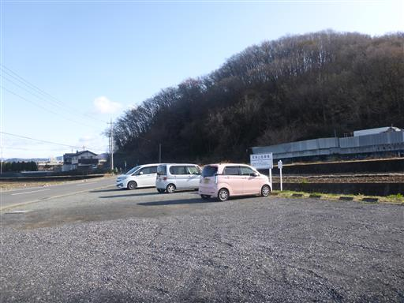
電車の高架からは赤城山がきれいに見える。
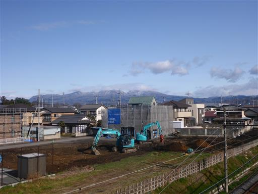
こちらは袈裟丸山方面。
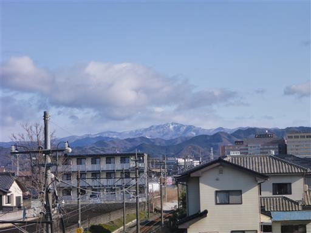
阿左美駅に到着する。ここから電車で登山口まで移動する予定だ。
地図と駅の位置がずれていて少し焦ってしまった。
この駅は最近移設されたようだ。
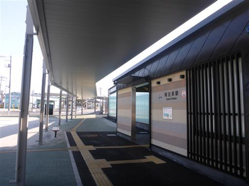
東武桐生線。単線だ。
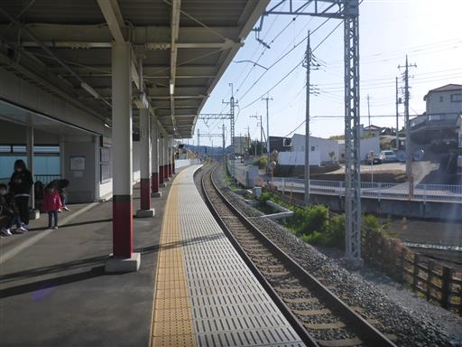
2駅先の治良門橋駅で下車。標高60m。
ちょっと寂れた駅前だ。
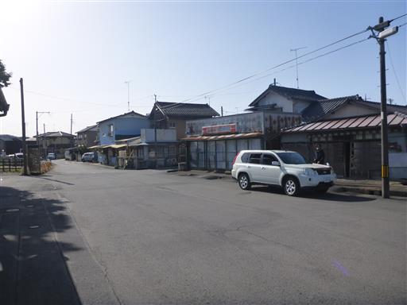
八王子公園に移動。長い滑り台がある。
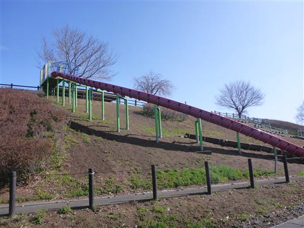
坂を登った先は広大な芝生広場。昼になると人で賑わうのだろうか？
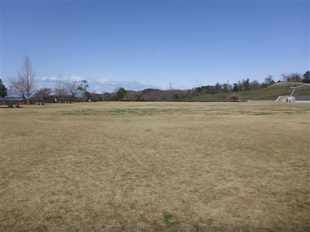
八王子公園から登山口まで移動。
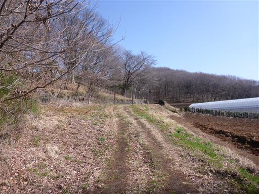
足元に咲くシロバナタンポポ。
関東で白いタンポポを見るのは珍しく、妻は初めて見たと言っている。
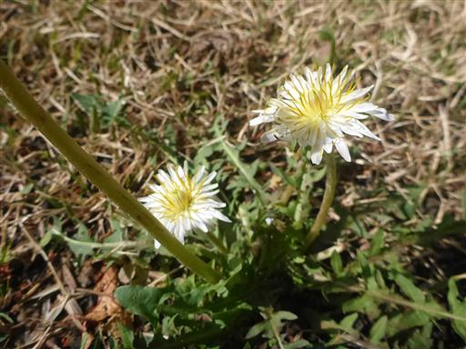
ゴルフ場の側を通り過ぎる。この辺りにはいくつかゴルフ場がある。
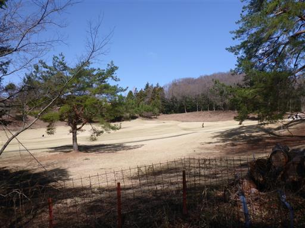
鹿島宮。1478年創建と記載されている。
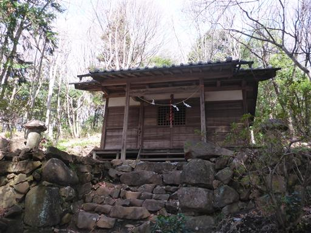
ホトケノザが大群生している。周囲が紫色に染まっている。
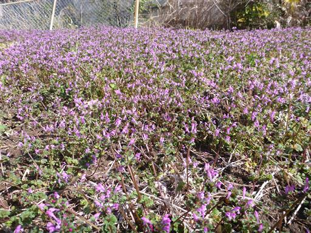
明るく開けた道に出る。
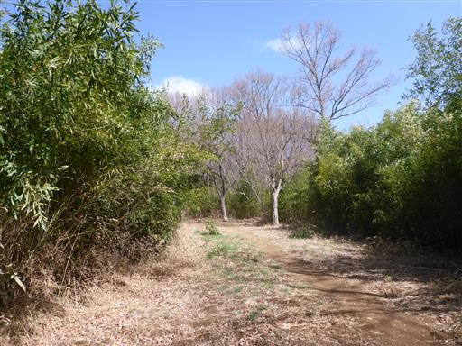
六地蔵。比較的新しそうだ。

ようやく登山口に到着。
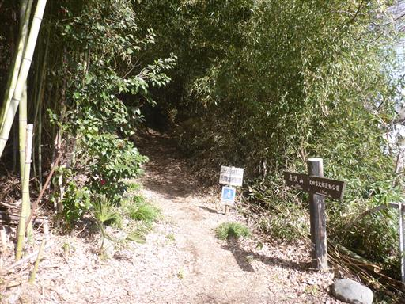
イノシシ被害があるとのこと。通行が困難なほどの被害がでるものだろうか？
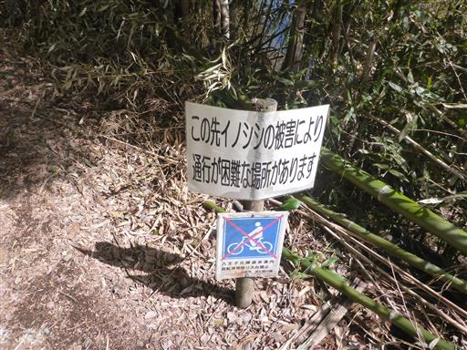
竹林の中に椿が咲いている。
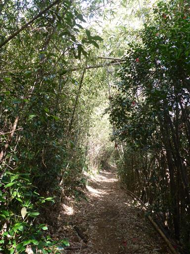
沢沿いの陰気な道。水はほとんど流れておらず、ところどころで小さな池ができている。
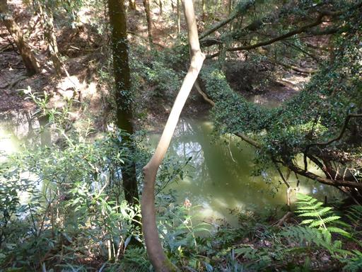
泥だらけの林道を横切る。
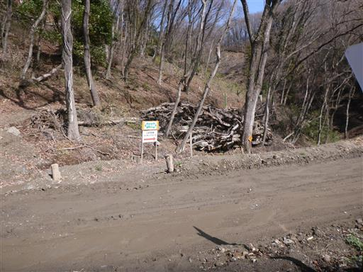
急な階段。尾根に出たり沢に出たり、結構アップダウンが多い。
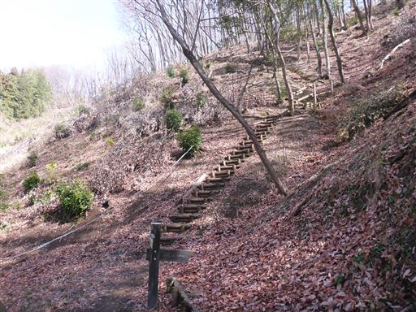
ドングリが芽を出して地面に根を張っている。
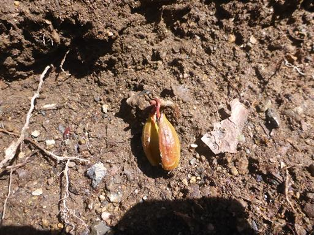
竹にきれいに苔が生えている。
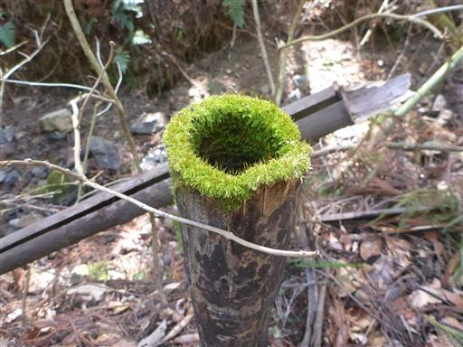
巨大な送電線鉄塔を通過。
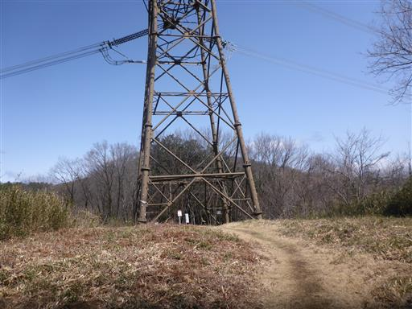
ようやくアップダウンが少なくなり、明るい樹林帯の道になる。
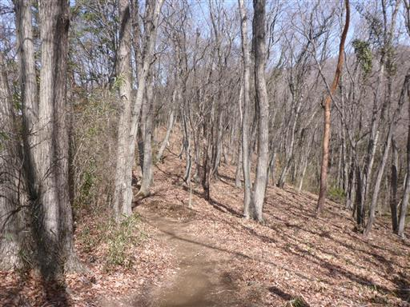
足元にはスミレが咲いている。
新緑にはまだ早いが、足元には春の花が見られる。
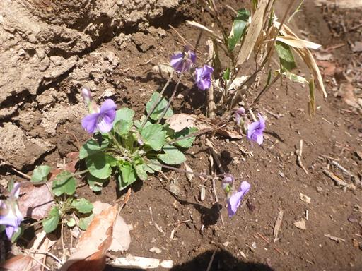
唐沢山に到着。標高261m。
本日一番最初のピーク。展望はあまりない。
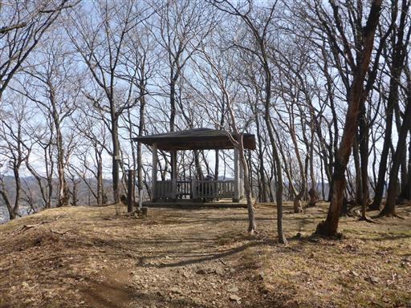
北西方向への縦走路を進む。なぜか木にトイレの標識が取り付けられている。
一体だれが何の目的で取り付けたのか…？

菅塩峠を通過。
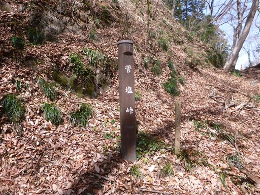
イノシシが掘り返した跡。確かに少々歩きにくいが、通行困難と言うほどのことはない。
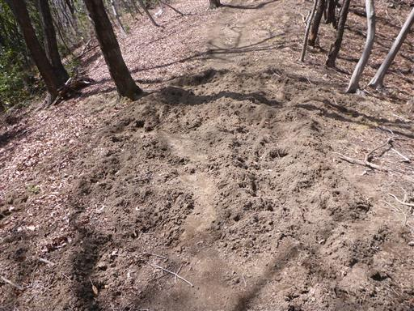
緩やかな尾根道が続く。
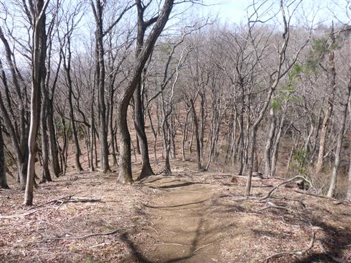
籾山峠で車道を横切る。そこそこ車通りがある。
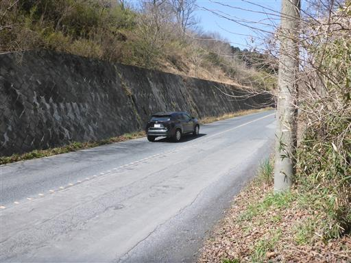
車道から登山道に復帰するところはフェンスがあって一見行き止まりに見える。
よく見ると隙間があり、そこから登山道に復帰できる。
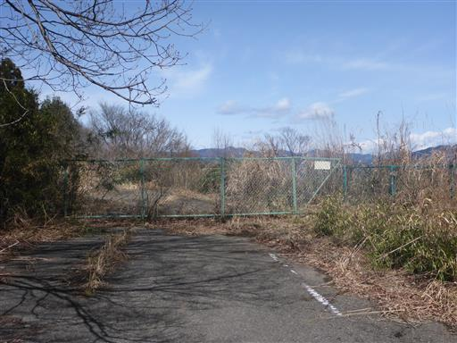
真横に伸びる木。いつか登山道ごと崩壊しそうだ。
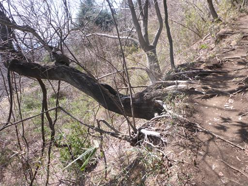
美しい登山道が続く。少し笹が出てきた。

ウグイスカグラの花が咲いている。
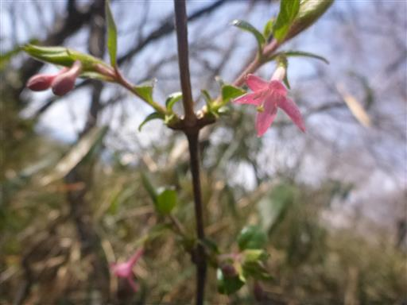
展望台に到着。どこまでも続く町並み、右手の白い山は浅間山だ。
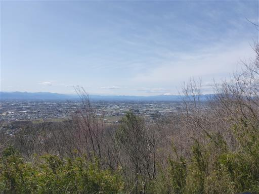
ここは太田市の最高地点のようだ。
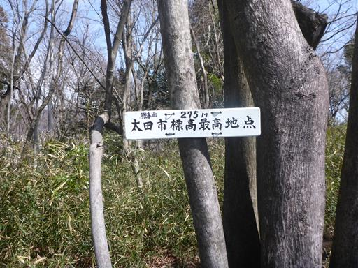
道端にある庚申塔。
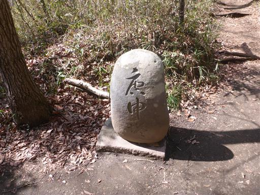
この辺りは登山道が岩場っぽくなる。難易度の高い場所は全くない。
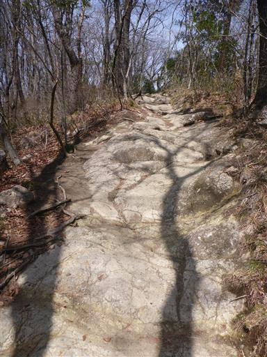
古井戸跡。僅かな窪みがあるが、もう井戸の形跡はほとんどない。
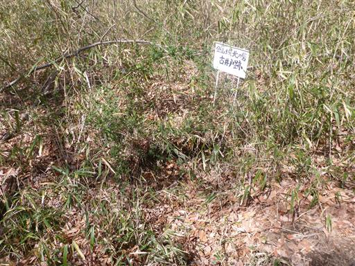
特に標識は無いが、地図によると姥沢ノ頭と呼ばれる場所に到着する。
ベンチがあり落ち着いた雰囲気の場所で、ここで休憩している人がそこそこいる。
ここから茶臼山を往復する。
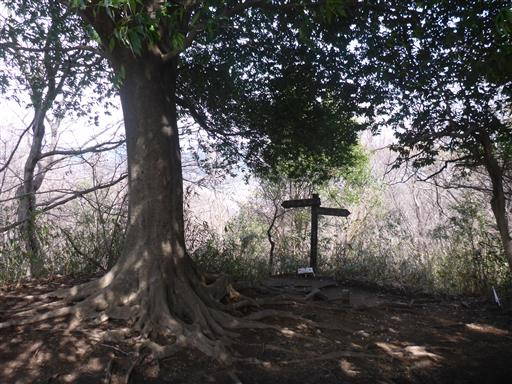
ツツジの花が咲いている。この山はツツジの木をよく見かける。
最盛期には目を楽しませてくれそうだ。
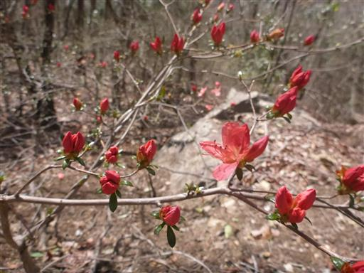
石の上に金色の人の顔っぽいものがある。これは一体何だろう？
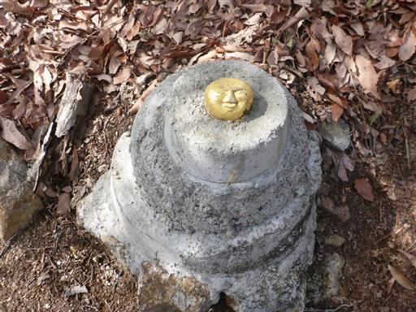
山頂直下の桜。
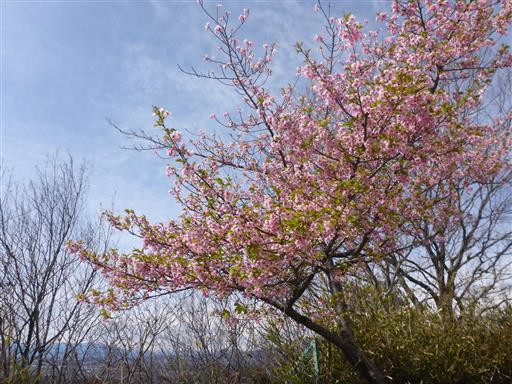
茶臼山に到着。標高294m。
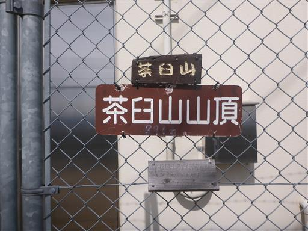
山頂は電波塔に占拠されていて少々無粋だ。
祠があり、古から信仰の山だったのかもしれない。
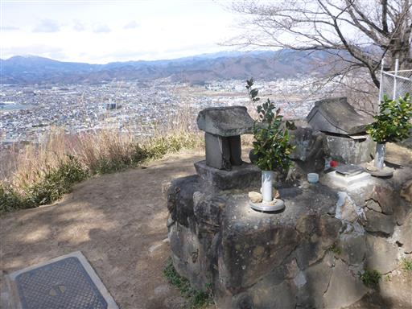
山頂からは赤城山の展望が良い。
風が強く寒いので、電波塔の陰に隠れて昼食をとる。
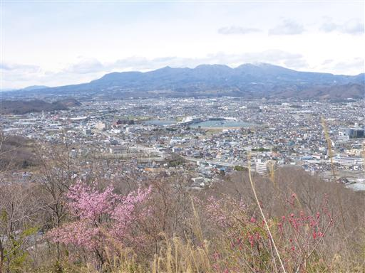
昼食をとったら山頂出発。
この辺りの山は東武鉄道の持ち物なのだろうか？
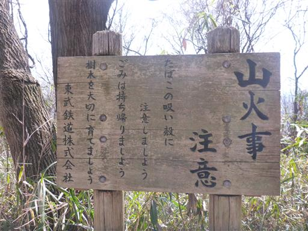
山中に突然現れるお墓。
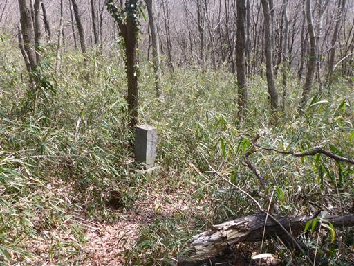
ソーラーパネル。最近山で見かけることが多くなった。
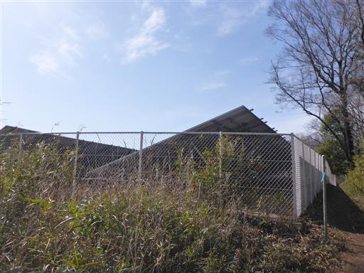
まだまだ続く気持ちの良い尾根道。
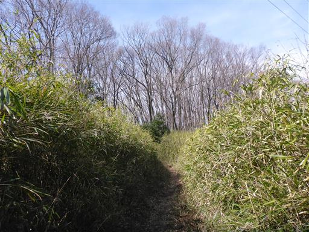
荒神山に到着。本日最後のピークだ。
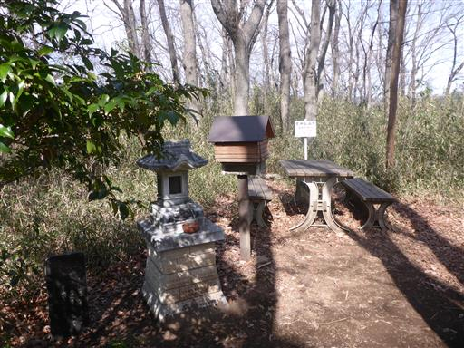
カタクリ群生地の標識があったため行ってみることにする。
笹薮に覆われてた道をかき分けて進むとカタクリを発見。
まだ多くは花を付けていない。
カタクリ群生地から先、下山中にもあちらこちらでカタクリを見られる。
わざわざ群生地に行かなくてもたくさん咲いている。
こちらはカタクリのつぼみ。
最後だけ急斜面の岩場になる。
無事下山。
それなりに長い道のりをのんびり歩くことができ、
春の景色や赤城山を眺めることができて充実した山行だった。